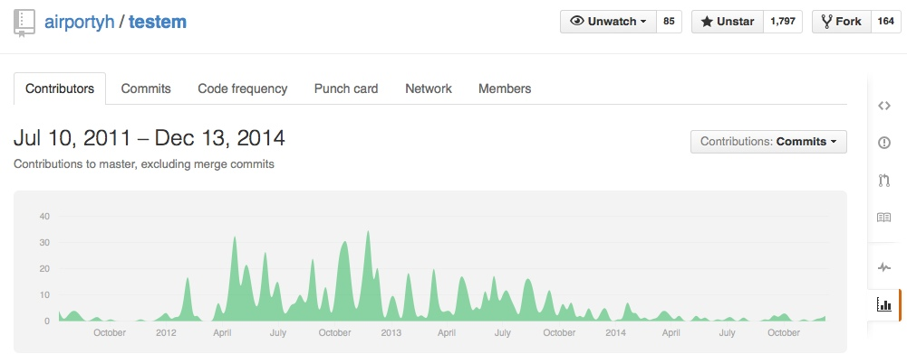
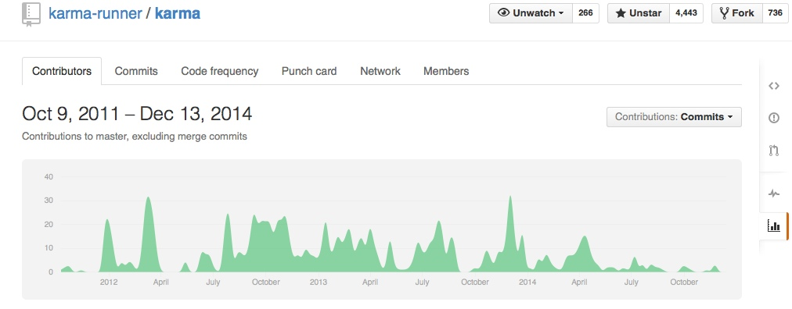
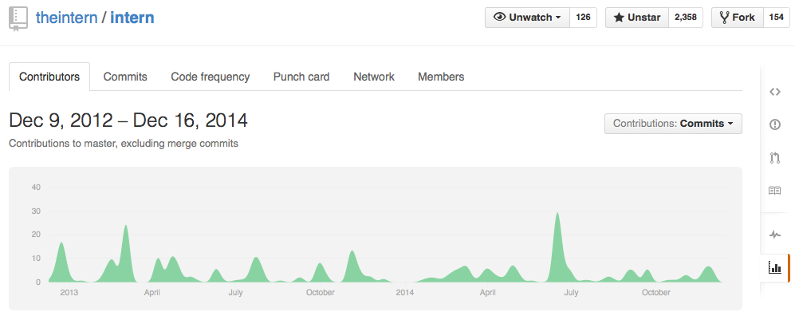
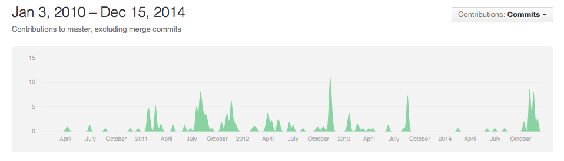

#JavaScript忘年会
今年で忘れていいもの
 YUI Library :ghost:
YUI Library :ghost:
YUI
- Important Announcement Regarding YUI | Yahoo Engineering
- YUIの開発は終了
- Yetiも開発終了? - Future of YETI? · Issue #90 · yui/yeti
- Pure.cssは継続 - YUI is going away - what does this mean for Pure? · Issue #373 · yahoo/pure
iframeでクロスドメインハック :ghost:
=> postMessage :star:
window.nameを使った方法<iframe src="http://example.com/" name="message">- iframe内からは
window.nameで"message"を取れる
- XSSで使われる
location.hashを使った方法http://example.com/#location.hash- Detail : Breaking The Cross Domain Barrier

iframeでクロスドメインハック :ghost:
=> postMessageを使おう :+1:
JsTestDriver :ghost:
Latest Release : Oct 5, 2012
=> testem/karma/Intern :star:
airportyh/testem

karma-runner/karma

Intern: A next-generation JavaScript testing stack

Vows :ghost:
Node.js向けのBDDフレームワーク
=> Mocha :question:
Vows :ghost:
- v1.0.0 に向けてコミット活発化

Raphaël :ghost:
=> Snap.svg :star:
Raphaël
- RaphaëlはレガシーIE(IE8以下)に対応してる
- Raphaëlの新規開発はもう殆どない
- 同じ作者のSnap.svgの方が開発が活発
- Raphaël.jsとSnap.svgとの違い
Raphaël.jsからSnap.svgに移行すべきか
Raphaël.js前提のプロジェクトが既に構築済みの場合，無理にSnap.svgに移行する必要はありません ... なお開発の注力は既にSnap.svgに移っており，今後Raphaël.jsの機能向上はそれほど期待できません．特にこだわりが無い限り，Snap.svgをお勧めします． -- Snap.svgの使い方まとめ
json2.js :ghost:
=> ネイティブ JSON :star:
douglascrockford/JSON-js
- IE8以降ならネイティブの
JSON.parseが使える
WebSQL
仕様の策定が停止
WebSQL
- Indexed Databaseを使う
- モダンブラウザのストレージ容量と調査方法まとめ - HTML5 Rocks
Component :ghost:
=> Duo :star:
Component
The team and organization have undergone massive changes. In summary, jonathanong stopped developing Component and started with normalize.io and the guys from segmentio switched to using duo. Component will still be maintained and updated while it is in use. You can read more about Duo.js and Component here.
[fit] new ActiveXObject(’MSXML2.XMLHTTP.6.0’); :ghost:
=> XMLHttpRequest :star:
XMLHttpRequest
attachEvent :ghost:
=> addEventListener :star:
addEventListener
jQuery Mobile :ghost:
Titanium :ghost:
まとめ
- IE8以下は忘れよう
まとめ
- 捨てる技術は捨てやすいように使おう
- polyfillを使える時は使おう
- テストフレームワークが死んだ時のことを考えよう
- ウェブ標準仕様化されてるならそれに反してないかをチェックしよう